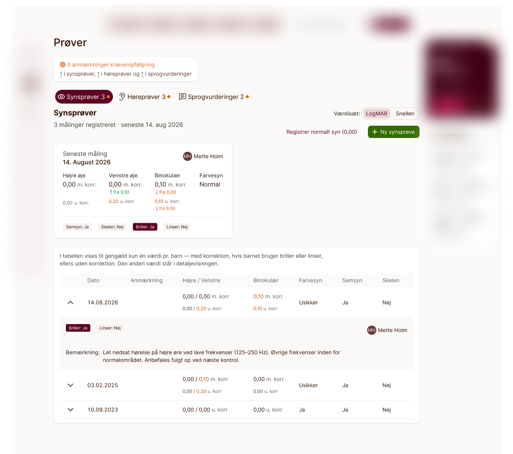
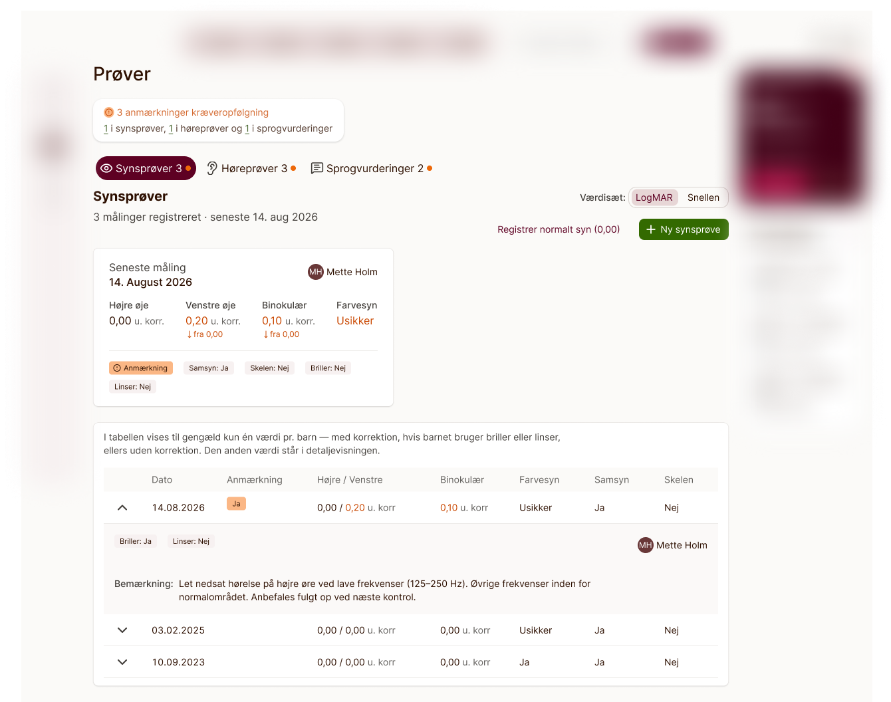
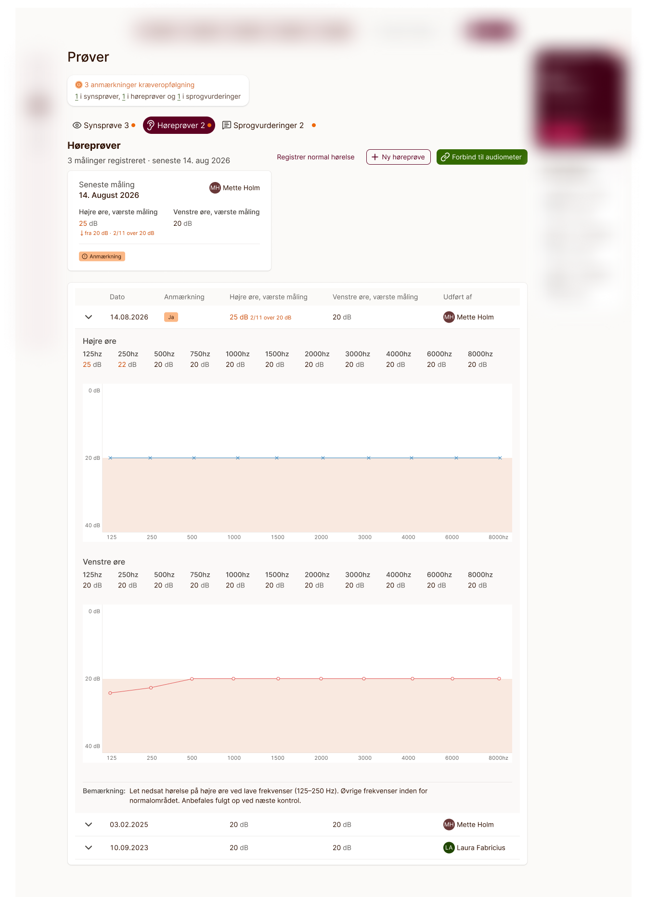
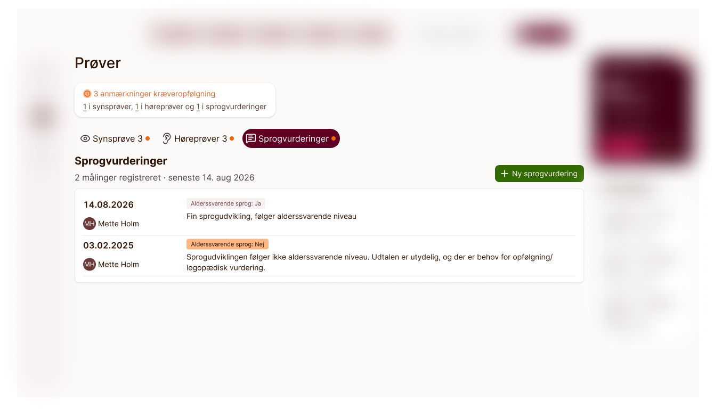

Streamlining vision, hearing, and language testing in Sundhedsplejen — redesigning how Novax's school health module shows a child's screening history, replacing four stacked, dense tables with three data-tailored tabs built around two critical questions: what's the latest result, and does it require follow-up? Streamlining af syns-, høre- og sprogtest i Sundhedsplejen — redesign af hvordan Novax' skolesundhedsmodul viser et barns screeninghistorik, hvor fire tætpakkede tabeller erstattes af tre datatilpassede faner bygget op om to centrale spørgsmål: hvad er det seneste resultat, og kræver det opfølgning?

The old version of this module put every screening result a child had ever had onto a single page: one table for vision tests, two more for hearing — one per ear — and a fourth for language assessments. Finding the most recent result meant scanning a wide table for the newest date; judging whether it needed attention meant reading every column by hand. The data wasn't wrong, it just wasn't organised around the two questions a health visitor actually asks first: what's the latest measurement, and does it need follow-up? Den gamle version af modulet samlede alle et barns screeningsresultater på én side: én tabel til synsprøver, to mere til høreprøver — én pr. øre — og en fjerde til sprogvurderinger. At finde det seneste resultat betød at man skulle scanne en bred tabel for den nyeste dato; at vurdere om det krævede opmærksomhed betød at man skulle læse hver kolonne manuelt. Dataene var ikke forkerte, de var bare ikke organiseret omkring de to spørgsmål; hvad er den seneste måling, og kræver den opfølgning?
My task was to redesign the module around those two questions for three quite different kinds of data — a handful of values per eye, up to 22 measurement points across both ears, and a short qualitative language note — without losing any of the detail the old tables held. Min opgave var at redesigne modulet omkring de to spørgsmål for tre ret forskellige datatyper — en håndfuld værdier pr. øje, op til 22 målepunkter fordelt på begge ører, og en kort kvalitativ sprognote — uden at miste noget af den detaljerigdom, de gamle tabeller indeholdt.
Before diving into layouts, I spent time shadowing a health visitor (sundhedsplejerske) at a local school during a full session of student health checks. Watching her conduct vision, hearing, and language tests in real time made one thing instantly clear: her attention needed to stay on the child, not on navigating software. Every extra second spent deciphering a dense table or clicking through menus took her focus away from the student sitting in front of her. Før jeg kastede mig over layouts, brugte jeg tid på at følge en sundhedsplejerske på en lokal skole gennem en hel runde af elevsundhedstjek. At se hende udføre syns-, høre- og sprogtest i realtid gjorde én ting krystalklar: hendes opmærksomhed skulle blive hos barnet, ikke på at navigere i software. Hvert ekstra sekund brugt på at afkode en tætpakket tabel eller klikke gennem menuer tog hendes fokus væk fra eleven, der sad foran hende.
I split the page into three tabs — Synsprøver, Høreprøver, and Sprogvurderinger — so each could adapt to its specific data shape rather than forcing three distinct test types into a one-size-fits-all table. Jeg delte siden op i tre faner — Synsprøver, Høreprøver og Sprogvurderinger — så hver enkelt kunne tilpasses sin specifikke datatype i stedet for at presse tre forskellige testtyper ind i én tabel, der skulle passe til det hele.
Using the insights from my school visit, I used AI as a design sparring partner to explore how to lay out each test type. I described the clinical environment, the physical constraints of a health checkup, and the specific reading tasks I had observed. Instead of taking the AI's suggestions as-is, I used them to rapidly stress-test alternative layouts and iterate on edge cases. Med indsigterne fra mit skolebesøg brugte jeg AI som sparringspartner til at undersøge, hvordan hver testtype kunne layoutes. Jeg beskrev det kliniske miljø, de fysiske rammer for et sundhedstjek og de konkrete aflæsningsopgaver, jeg havde observeret. I stedet for at tage AI'ens forslag for pålydende brugte jeg dem til hurtigt at stressteste alternative layouts og iterere på edge-cases.
Two core patterns emerged from this synthesis of field research and AI exploration:To centrale mønstre opstod fra dette arbejde:
What each tab actually shows past that shared foundation depends entirely on its data — a handful of numbers, more than twenty of them, or almost none. Hvad hver fane rent faktisk viser ud over det fælles fundament, afhænger helt af dens data — en håndfuld tal, mere end tyve af dem, eller næsten ingen.
Some municipalities screen with Snellen charts, others with LogMAR, and health visitors often switch between the two depending on the school. A primary selector lets them set the active scale so that both "Ny synsprøve" and "Registrer normalt syn" save under the correct standard. In the history table, each eye's results are condensed into a single cell: uncorrected measurements show by default, but for children wearing glasses or contact lenses, the corrected value takes priority while the uncorrected baseline stays visible below to track long-term vision drift. Nogle kommuner screener med Snellen-tavler, andre med LogMAR, og sundhedsplejersker skifter ofte mellem de to afhængigt af skolen. En button group lader dem sætte det aktive værdisæt, så både "Ny synsprøve" og "Registrer normalt syn" gemmes under den korrekte standard. I historiktabellen er hvert øjes resultater kondenseret til én celle: ukorrigerede målinger vises som standard, men for børn med briller eller kontaktlinser har den korrigerede værdi forrang, mens den ukorrigerede baseline forbliver synlig nedenunder til at følge barnets langsigtet synsudvikling.
The two states below are the same card responding to different children: one child with glasses and one without. De to tilstande nedenfor er det samme kort, der reagerer på forskellige børn: ét barn med briller og ét uden.

A single hearing test produces up to 22 measurements — eleven frequencies per ear. Read as a raw table, even a completely normal result takes real effort to confirm. Working through it with AI, I landed on two numbers per ear instead: the worst measurement recorded, and how many of the eleven frequencies fall outside the normal range. A normal result becomes obvious at a glance — worst value in range, nothing flagged — and so does a result worth a closer look, along with roughly how much of it is affected. En enkelt høreprøve giver op til 22 målinger — elleve frekvenser pr. øre. Læst som en rå tabel kræver selv et helt normalt resultat en reel indsats at bekræfte. Ved at arbejde det igennem med AI landede jeg i stedet på to tal pr. øre: den værste registrerede måling, og hvor mange af de elleve frekvenser der ligger uden for normalområdet. Et normalt resultat bliver tydeligt med det samme — hvis værste værdi er inden for normalen, er intet markeret — omvendt vil et resultat uden for normalområdet, være markeret og hurtigt at spotte.
To see exactly where issues lie — low tones, high tones, one ear or both — expanding the row plots the same numbers on a chart shaped like a clinical audiogram, so a health visitor can see exactly where a child's hearing drops off instead of reading it out of a column of decibels. For at se præcis, hvor problemerne ligger — lave toner, høje toner, ét øre eller begge — udfolder rækken de samme tal på et diagram formet som et klinisk audiogram, så en sundhedsplejerske kan se præcis, hvor et barns hørelse falder fra, i stedet for at aflæse det ud af en kolonne af decibel.

Language assessments are the simplest of the three: a date and the responsible health visitor identify the entry, a yes/no judgement and a short free-text note describe it, and an optional remark flags it for follow-up — shown only on entries that actually carry one. Five fields, most of them text, is exactly the case a plain list handles better than a table built for numbers. Sprogvurderinger er den simpleste af de tre: en dato og den ansvarlige sundhedsplejerske identificerer posten, en ja/nej-vurdering og en kort fritekstnote beskriver den, og en valgfri anmærkning markerer den til opfølgning. Fem felter, de fleste af dem tekst, er præcis det tilfælde, hvor en enkel liste fungerer bedre end en tabel bygget til tal.

The final design transforms a cluttered audit trail into a proactive early-intervention tool. Beyond the UI itself, the strength of this project came from combining real-world observation with rapid AI iteration: Det endelige design forvandler en uoverskuelig oversigt over undersøgelser til et proaktivt værktøj til tidlig indsats. Ud over selve UI'et kom projektets styrke fra at kombinere observation fra den virkelige verden med hurtig AI-iteration:
It proved that the best results come from grounding design decisions in real human workflows first, using AI not to guess the user's needs, but to stress-test solutions against them. Det viste, at de bedste resultater kommer af først at forankre designbeslutninger i virkelige menneskelige arbejdsgange og bruge AI ikke til at gætte brugerens behov, men til at stressteste løsninger op imod dem.